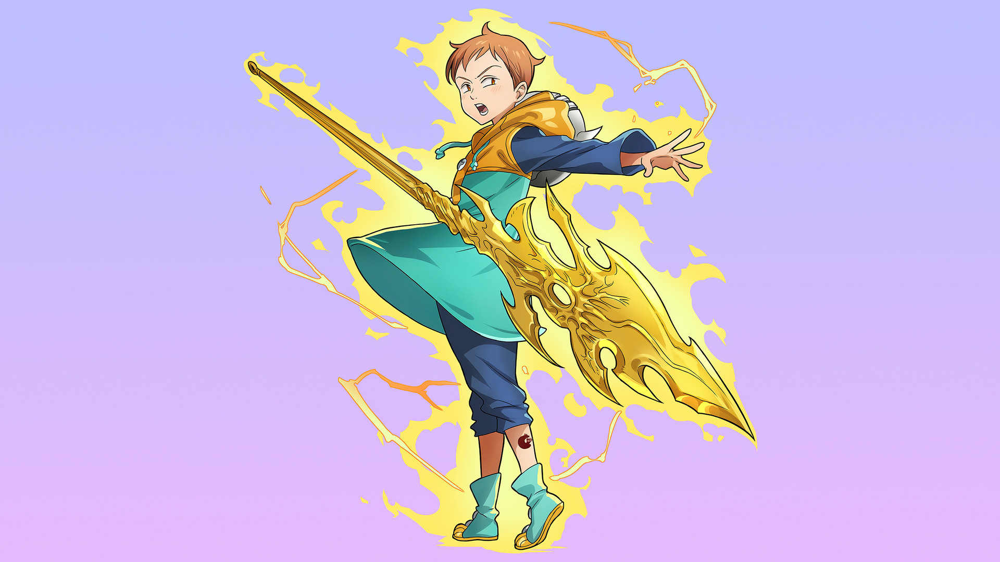
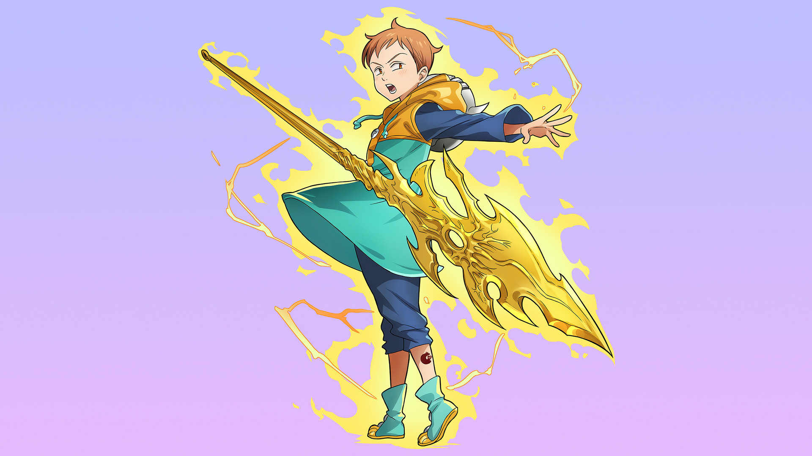

7 pecados capitais
Os Sete Pecados Capitais são a ordem mais forte e mais cruel dos Cavaleiros Sagrados no Reino de Liones. Foram formados por sete criminosos brutais, que tinham sido todos condenados por crimes graves e haviam tatuado os símbolos de sete animais em seus corpos.
meliodas
Meliodas, é o líder dos Sete Pecados Capitais e atual Rei de Liones,, carregando o título de Pecado da Ira do Dragão
Escanor
Escanorera o Pecado do Leão do Orgulho dos Sete Pecados Capitais, o ex-segundo príncipe do Reino de Castellio, e o homem conhecido em todo o Reino de Liones como "O Cavaleiro Sagrado Mais Forte"
Ban
é um membro dos Sete Pecados Capitais, conhecido como o Pecado da Ganância da Raposa.
King
King um membro dos Sete Pecados Capitais e é conhecido como o Pecado da Preguiça do Urso. Seu nome verdadeiro é Rei das Fadas Harlequin,
Diana
Diane é um membro dos Sete Pecados Capitais e é conhecida como o Pecado da Inveja da Serpente, além de ser a Rainha das Fadas. Ela é um membro do Clã dos Gigantes,
Merlin
Merlin é um membro dos Sete Pecados Capitais e é conhecida como o Pecado da Gula do Javali. Ela é considerada a maior maga de Britânia.
Gowther
Gowther é um membro dos Sete Pecados Capitais e é conhecido como o Pecado da Cabra da Luxúria. Foi revelado que ele é um boneco, criado por um grande bruxo e que é um membro dos Dez Mandamentos.